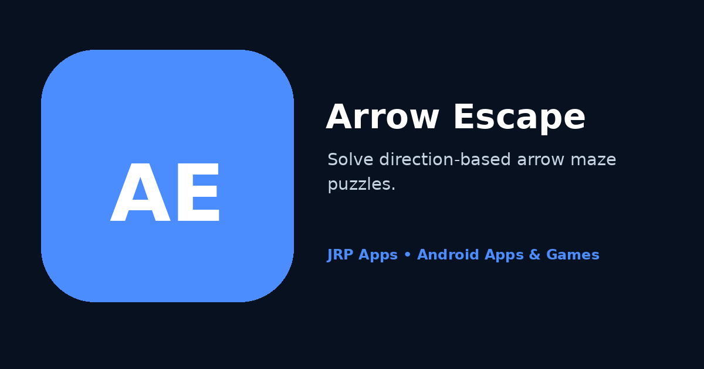

Arrow Escape turns simple directional movement into a planning challenge. Each board asks players to study how arrows are positioned, identify which paths are blocked and choose an order that allows pieces to leave safely. The game solves the common puzzle-design problem of being easy to understand but difficult to master: the objective is visible immediately, while later boards require deeper spatial reasoning.
The experience is designed for touch screens and short mobile sessions. Clear visual feedback helps players understand whether a move is possible, and progressive levels create a sense of improvement without requiring long tutorials. Because success depends on observation and sequence rather than speed alone, players can pause, reconsider and approach the same board from a different angle.
Fans of structured logic can continue with Sudoku, while players who prefer colour-based planning can try Water Sort Master. ChessMaster offers another thoughtful board experience for users interested in strategy.
Features and Why They Matter
Direction-based arrow puzzles. Every arrow follows its displayed direction, so the board itself contains the information needed to plan. This rule is easy to learn and creates meaningful consequences when one piece blocks the route of another.
Progressive level challenge. Boards are arranged to introduce complexity over time rather than presenting every difficulty at once. Gradual progression helps new players learn patterns while giving experienced players increasingly demanding sequences to solve.
Spatial planning and sequencing. Players must consider not only where an arrow can move, but which arrow should move first. This develops route planning, visual scanning and cause-and-effect reasoning across the entire board.
Quick mobile sessions. A single puzzle can be attempted during a short break, while multiple levels can support a longer session. Flexible session length makes the game suitable for commuting, waiting or relaxing at home.
Clear feedback and touch controls. Responsive interactions show the outcome of a choice without unnecessary interface clutter. Clear feedback helps players learn from blocked paths and focus on the puzzle instead of interpreting controls.
Offline-friendly play. The core single-player puzzle experience is intended to remain useful without a continuous connection. This makes Arrow Escape practical during travel or in places where network access is unreliable.
Who Should Use It
Arrow Escape is suited to puzzle fans, casual mobile players, students practising spatial reasoning and adults looking for a calm but engaging mental challenge. A beginner can learn by observing simple boards, while a more experienced player can search for efficient move orders on crowded layouts.
The game does not require specialist knowledge or fast reflexes. It is particularly useful for people who enjoy solving at their own pace, repeating a level after a mistake and discovering a better sequence through observation.
Privacy-First Data Handling
Arrow Escape is built around self-contained single-player puzzles. Core play does not require a public profile, direct communication with other players or the publication of personal gameplay data. This keeps attention on the board and reduces unnecessary social exposure.
The game aims to avoid permissions that are not needed for its stated functions. Core levels are intended to remain useful offline, although installation, updates, support, advertising or optional connected services may require internet access. Details are available in the Arrow Escape privacy policy.
JRP Apps applies a privacy-first philosophy by limiting collection to what is reasonably required for operation, security, support or optional services and by offering a direct contact route for questions.
Fast, Lightweight Android Performance
Puzzle interaction is designed to feel immediate. Fast startup helps players reach a board quickly, while lightweight rendering and efficient touch handling keep arrows responsive. Restrained effects preserve clarity and reduce unnecessary processing during repeated level attempts.
The Material Design interface adapts to supported Android phones with readable board elements and accessible controls. Efficient animation supports battery-friendly play, and Android 11 or later provides the stated compatibility baseline. Testing focuses on board stability, touch accuracy, startup time and smooth transitions between levels.
Offline Use and Regular Updates
Core puzzle play is intended to remain useful offline once the game and relevant content are available on the device. Internet access may still be needed for installation, Google Play updates, support, advertising or optional connected features. Using the latest release is recommended for level, compatibility and stability improvements.
App Preview

Promotional preview for Arrow Escape, highlighting a direction-based Android maze puzzle built around route planning and spatial logic.
Frequently Asked Questions
How do you play Arrow Escape?
Study each arrow’s direction and choose a sequence that clears open routes from the board. Moving one arrow can create or remove space for others.
Is Arrow Escape a timing game?
The main challenge is planning and spatial reasoning rather than rapid tapping, so players can study the board and solve at their own pace.
Does the game become more difficult?
Yes. Progressive levels introduce more crowded layouts and more demanding move sequences as players become familiar with the core rule.
Can Arrow Escape be played offline?
Core single-player puzzle play is intended to remain useful offline. Installation, updates, support, advertising or optional online services may require connectivity.
Does Arrow Escape require a player account?
Ordinary puzzle play is designed not to require a public player profile or communication with other users.
What skills does the game use?
Players use visual scanning, direction recognition, sequencing, spatial reasoning and cause-and-effect planning to clear each board.
Which Android versions are supported?
The website lists Android 11 or later as the requirement, with additional device compatibility details available through Google Play.
Where can I report a level or control problem?
Email support@jrphub.com with the level, device, Android version and a clear description of what happened.
Related Apps and Games
Enjoy the route planning in Arrow Escape? Sudoku develops structured deduction, Water Sort Master uses colour sequencing, and ChessMaster explores longer-term board strategy.
SudokuClassic 9 × 9 number puzzles with notes and difficulty choices.
Benefit: develop structured deduction and daily logic practice.